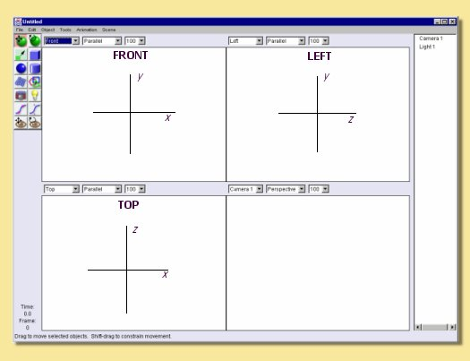
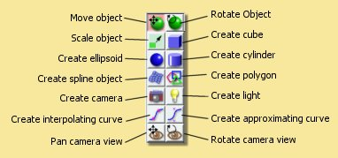
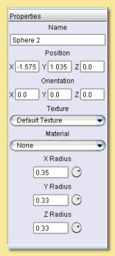
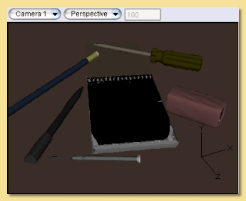
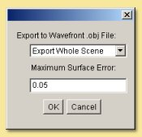
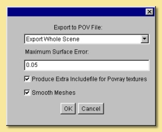
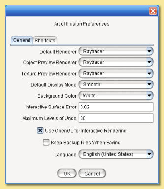

Der Anfang
(Extrahiert vom AOI Handbuch geschrieben von Julian MacDonald)
2.2.1 Hauptfenster Layout
Der untenstehende Screenshot zeigt das Hauptfenster:

Bitte beachten das seit Version 1.8 von Art of Illusion selbiges eine Benutzer Schnittstelle (UI) benutzt die auf Java Swing basiert. Das bedeutet das man diese UI im "Look and Feel" anpassen kann. Es gibt reichlich "Look and Feel" als download (z.B. www.javootoo.com) Um eines zu benutzen benötigt man ein einfaches Startup Script. (siehe here for details).
Das Hauptfenster ist in verschiedene Bereiche unterteilt: Die 4 interaktiven Ansichtsfenster , die Objekt Liste und die Objekt Eigenschaftsliste , sowie die Werkzeug Icons, von denen jedes im Detail weiter unten beschrieben wird. Die Zeitleiste kann auch angezeigt werden - siehe die Animation Sektion für Einzelheiten. Die Seiten Leisten sind "dockable", so das das Aussehen des Layouts angepaßt werden kann wie benötigt - Einfach am oberen Balken der Objekt Liste des Eigenshafts Fensters oder der Timeline ziehen und das jeweilige Panel an die Oberseite, Unterseite oder Seitenleiste ziehen.
2.2.2 Ansichtsfenster
Die 4 Ansichtsfenster Die 4 Ansichts- oder Arbeitsfenster im Hauptfenster zeigen verschiedene Ansichten der Szene. Standardmäßig zeigen die oberen 2 Fenster und das linke untere Fenster parallele Ansichten (Vorderansicht Ansicht links und Oberseite)der Szene, während das rechte untere Fenster die persektivische Kameraansicht der selektierten Kamera zeigt. Diese Ansichten können leicht geändert werden über die Dropdown Liste über jedem Fenster.
Das aktive Fenster erkennt man an der dickeren Außenlinie - im obigen Beispiel ist es das obere rechte Fenster. Das ist wichtig für alle durchgeführten Operationen die in einem Fenster funktionieren. Um das aktive Fenster zu wechseln ist es ausreichend einfach mit dem Cursor in das gewünschte Fenster zu klicken.
In allen Fenstern kann man unabhängig voneinander verschieben, zoomen und rotieren mit den Blickpunkt Kontrollen.
 Genauso kann man aber rechte (rotieren), linke (verschieben) und
die mittlere Maustaste (Rad/zoomen) benutzen, oder die Keyboard Shortcuts:
Genauso kann man aber rechte (rotieren), linke (verschieben) und
die mittlere Maustaste (Rad/zoomen) benutzen, oder die Keyboard Shortcuts:Verschieben:
 dann mit dem Mauszeiger in das Ansichtsfenster klickenziehen .
dann mit dem Mauszeiger in das Ansichtsfenster klickenziehen .
Zoom/Vergrößerung :
dann die STRG Taste gedrückt halten
und mit gleichzeitig gedrückter rechter Maustaste die Maus aufwärts (zoom out) oder
abwärts (zoom in) bewegen oder Ansicht drehen :
 und mit der linken gedrückten Maustaste im Fenster.
Bei gedrückter SHIFT Taste wird die Rotationsachse auf vertikal oder horizontal begrenzt.
Bei gedrückter STRG Taste wird um den Mittelpunkt der Ansicht gedreht.
und mit der linken gedrückten Maustaste im Fenster.
Bei gedrückter SHIFT Taste wird die Rotationsachse auf vertikal oder horizontal begrenzt.
Bei gedrückter STRG Taste wird um den Mittelpunkt der Ansicht gedreht.
Wenn ein Objekt ausgewählt ist wird das Zentrum desselben als Rotationszentrum benutzt.
Wenn in einem der Ansichtsfenster die da heißen "Vorderseite, Links, Oberseite" rotiert wird, bedeutet das das dieses Fenster nicht länger "Vorderseite, Links, Oberseite" sein kann - entsprechend heißt es nun in der Titelleiste "Andere". Wenn man aus der Dropdown Liste wieder einen entsprechenden Eintrag auswählt wird die Ansicht wieder auf "default" gesetzt!
Wenn mehrere Kameras in der Szene vorhanden sind kann man diese in jeder Ansicht über die Dropdown Liste auswählen.
Wenn es leichter erscheint in nur einer großen Ansicht zu arbeiten einfach Szene -> Eine Ansicht aus dem Menu auswählen und das aktuell selektierte Fenster füllt die Arbeitsfläche.
Ein wissenswertes Detail ist das benutzte Koordinatensystem, da dies von Programm zu Programm unterschiedlich gehandhabt wird. Art of Illusion benutzt das "Rechte-Hand-System", d.h. wenn die positive X-Achse nach rechts zeigt und die positve Y-Achse nach oben, - dann zeigt die positive Z-Achse aus dem Monitor heraus. Wenn man die Vorder- oder Frontansicht vor sich hat, verläuft die Y-Achse von unten nach oben - die X-Achse von links nach rechts und die Z-Achse von hinten nach vorne wie auf dem Bild:

Manchmal ist es sinnvoll schnell die ganze Szene zu überblicken oder ein bestimmtes Objekt darin im Arbeitsfenster füllend sichtbar zu machen. Das wird erreicht mit Szene -> Ansicht auf markierte Objekte, was die Zoom Stufe des Ansichtsfensters so ändert, das das entsprechende Objekt voll sichtbar ist. Mit Szene -> Ansicht auf gesamte Szene was dann die ganze Szene formatfüllend in das entsprechende Fenster einpasst.
2.2.3 Darstellungs arten
Es gibt 5 unterschiedliche Darstellungsarten in AOI für die Realtime Ansichten: Drahtgitter Ansicht, Schattierte/Shaded Ansicht, Geglättete Ansicht, Texturierte Ansicht and Transparente Ansicht. Die Ansichtsart wird ausgewählt über das Menu Szene -> Ansichtsmodus -> Drahtgitter/Schattiert/Geglättet/Texturiert/Transparent und ändert nur die Darstellung im aktiven Fenster (errinnert Ihr Euch? - Das mit dem dickeren Rahmen!). Der Unterschied zwischen den Darstellungen ist im untenstehenden Bild dargestellt:

Die Wahl des Ansichtsmodus beeinflusst die Performance. Die Geschwindigkeit nimmt normalerweise in der Reihenfolge des gewählten Modus ab. Also von Drahtgitter -> schattiert -> zu texturiert nimmt die Geschwindigkeit von Rotation und Verschiebungen der Ansicht ab. Je nach Ausstattung des Computers wird dies bei komplexen Szenen stärker oder nicht so stark bemerkbar sein. Es wird empfohlen zusätzlich JOGL (Java Open GL) zu installieren und in AOI unter Bearbeiten -> Einstellungen -> Benutze OpenGL für Interaktives Rendern einen Haken zu setzen! Die Ansichten können - wie bereits gesagt - für jedes Fenster unabhängig eingestellt werden.
Beachte das die schattierte und geglättete Ansicht die Farben der ausgewählten Materialien darstellen - allerdings in vereinfachter Weise. Ebenso die Texturen. Die texturierte Ansicht gibt eine etwas genauere Darstellung her - doch auch diese ist nicht so aussagekräftig wie ein Vorschau Rendering. See Texturen und Material für weitere Einzelheiten.
2.2.4 Icons
Am linken oberen Bildrand sind Icons für die schnelle Aktivierung der meistgenutzen Werkzeuge. Diese ermöglichen es neue Objekte zu erstellen und diese zu bewegen, rotieren und zu skalieren. Wenn der Cursor längere Zeit über eines der Icons gehalten wird (hovert) erscheint ein Tooltip - das näheren Aufschluß über das Werkzeug gibt.
| Das Bild zur Rechten gibt eine kurze Beschreibung jedes Icons, bzw. Werkzeugs. Diese werden im Detail in den relevanten Bereichen dieses Handbuchs eingehender beschrieben |  |
Für jedes anwählte Werkzeug wird in der Unterleiste von AOI ein Text angezeigt der die Nutzung das Werkzeug genauer beschreibt. Vergleichbar mit der Kommandozeile von AutoCAD
Mit den Verschieben (Move) und Drehen (rotate) Werkzeugen können Objekte um einen Pixel per Tastendruck mit den Pfeiltasten bewegt werden. Wenn gleichzeitig die ALT Taste gedrückt wird sind es 10 Pixel pro Tastendruck.
Die Leertaste schaltet immer zwischen dem Verschieben Werkzeug und dem zuletzt benutzten Werkzeug hin und her.
2.2.5 Objektliste und Eigenschaftsleiste
Auf der rechten Seite des Hauptfensters befindet sich die Objektliste (im Normalfall oben angeordnet) und die Eigenschaftsleiste (im Normalfall unten rechts angeordnet) Finally, on the right hand side of the main screen are the Object List.
Nicht wirklich überraschend ist die Objektliste die Liste in der alle Objekte aufgeführt werden - einschließlich Kamera und Lichter einer Szene. Objekte können in dieser Liste ausgewählt werden um weiter bearbeitet zu werden. Um mehrere Objekte gleichzeitig zu selektieren einfach die <STRG> Taste gedrückt halten während des Auswahlklickens, oder - um eine zusammenhängende Reihe auszuwählen einfach nach anklicken des ersten Objekts die <UMSCHALT (shift)> Taste gedrückt halten und ein anderes Objekt selektieren um die Reihe dazwischen zu bilden.
Einige Objekte (z.B. Kurven, Splines und Mesh-Objekte) ermöglichen ein Bearbeiten über verschieben, rotieren und skalieren hinaus. Doppelklicken auf diese Objekte sowohl im Arbeitsfenster als auch in der Objektliste öffnet das jeweils geeignete Editierfenster.(siehe Objekte editieren).
Die Objektliste erlaubt auch das hierarchische Arrangieren der Objekte, so das man Eltern-Kind Beziehungen erstellen kann. Verschieben, rotieren und skalieren des Eltern Objektes wird das Kind Objekt ebenfalls beeinflussen, wenn das so im Dialog des jeweiligen Transform Werkzeugs (doppelklick) eingestellt wird. (siehe Objekte transformieren). Ein Objekt kann zu einem Kind gemacht werden, indem man daraufklickt und es dann zu dem ausgesuchten Elternteil hinzuschiebt. Ein Pfeilbalken zeigt an wo das Objekt hingelegt wird. Das Loslassen der Maustaste vollendet die Aktion. Das Elternobjekt erhält dann einen Pfeil an der linken Seite - so weiß man das dieses Objekt mindestens ein Kindobjekt enthält. Klickt man auf den nach rechts zeigenden Pfeil zeigt dieser nach unten und die Hierarchie wird ausgeklappt dargestellt. Ein weiterer Klick zeigt wieder nur das Elternobjekt.
Eine Eltern-Kind Beziehung kann besonders nützlich sein wenn Animationen erstellt werden sollen.
 |
Im Beispiel zur linken ist die Hierarchy
einer Zahnpastatube (toothpaste tube) dargestellt. In vorliegenden Fall sind die Zahnpasta (toothpaste)
und die Kappe (lid) Kinder von Zahnpastatube (toothpaste tube) und 'lid end' ist Kind von Kappe (lid).
Transformationen der Zahnpastatube können so eingestellt werden das sie alle Unterobjekte betreffen
während alle Transformationen die die Kappe (lid) betreffen auch nur deren Unterobjekte betreffen. Falls nötig kann die Objektliste auch unsichtbar gemacht werden über Szene -> Objektliste ausblenden. |
Ein Rechtsklick auf Objekte in der Objektliste öffnet ein Menü, das alle möglichen Befehle für das Objekt anzeigt, einschließlich z.B. Bearbeitungs- werkzeuge, zuweisen von Texturen und Materialien und der Möglichkeit ein Objekt anzuzeigen/auszublenden . Diese Möglichkeiten kann man auch mit einem Rechtsklick auf die Objekte im Arbeitsfenster direkt aufrufen.
Die Eigenschaftleiste zeigt verschiedene editierbare Eigenschaften für das aktuell ausgewählte Objekt im unteren Beispiel.
|  | Die
erscheinenden Eigenschaften hängen von der Art des(r) Objekte(s) ab.
In diesem Beispiel sind die Eigenschaften eines
Kugelobjektes
angezeigt und können bearbeitet werden. Die Position- und Ausrichtungswerte können direkt eingegeben werden und die Texturen und Materialien können ebenfalls gesetzt (zugewiesen)werden. Der X,Y und Z Raduis des Kugelobjektes kann direkt eingegeben werden oder über die Kontrollknöpfe. Um mit diesen zu arbeiten einfach den Mauscursor auf den Knopf setzen, klicken und links oder rechts drehen. Um per Umdrehung stärkere Wertverstellung zu erreichen einfach die ALT Taste gedrückt halten während des Knopfdrehens. |
2.2.6 Ausblenden/Anzeigen von Objekten
Gelegentlich ist es sinnvoll Objekte auszublenden, z.B. in einer sehr vollen oder komplexen Szene wo einige Objekte andere überlagern können - so das die Bearbeitung selbiger schwieriger wird. Zudem wird die Perfomance während des Arbeitens verbessert. Um Objekte auszublenden, selektiert man diese und klickt auf Szene -> -> Objekte ausblenden. Alternativ öffnet ein Rechtsklick auf die Auswahl in der Objektliste oder auf das Objekt selbst ein Menü und darin wählt man einfach Markierte Objekte ausblenden. Das unterdrückt auch das Rendern der Objekte. Also rechtzeitig wieder einblenden. Ausgeblendetet Objekte erscheinen ausgegraut in der Objektliste.
Um Objekte wieder anzuzeigen einfach diese auswählen und das Menü wieder aufrufen mit Klick auf Szene -> Objekte einblenden oder wie oben beschrieben ein Rechtsklick auf dem Objekt oder in der Objektliste Markierte Objekte anzeigen.
2.2.7 Gitter
Manchmal ist es hilfreich Objekte genau zu positionieren und das Anschalten des Hintergrundgitters (Grid) hilft genau dabei. Das Grid wird aktiviert über Szene -> Hintergrundgitter... was die folgende Dialogbox aufruft:
 |
Der Grid Abstand (Gitterabstand) bestimmt den Abstand der Gitterlinien in jedem Arbeitsfenster
Um das Gitter auch zu sehen muß die Checkbox Grid einrasten markiert werden
Es ist auch möglich den Einrastmodus mit dem markierten Kästchen Am Grid einrasten zu aktivieren.
Das fürht daszu das Objekte sich in diesen Schrittweiten bewegen lassen.
Diese Schrittweiten können mit der Einrastunterteilung auch feiner oder gröber
als das Hintergrundgitter eingestellt werden.
Im gezeigten Beispiel hat man innerhalb eines Gitterquadrats 10 Snappunkte,
oder anders gesagt : Der Snap ist 1/10 des Grids wenn die Am Grid einrasten Box aktiviert ist.
|
Nach dem einschalten des Grids (mit OK Knopf bestätigen) erscheint das Grid in allen Ansichten. In der Kamera Ansicht erscheint es als Grundebene.
2.2.8 Kordinatenachsen
Manchmal verliert man beim Navigieren in einer 3D Szene den Weg und die Objekte aus den Augen. In diesem Fall ist es eine gute Idee sich die Koordinatenachsen anzeigen zu lassen. Dies geht via Szene -> Show Koordinatenachse (kleine Übersetzungsfehler übersehe ich ohnehin großzügig). Das läßt 3 Linien mit X,Y undZ Markierungne in jedem Arbeitsfenster erscheinen. Gleiches gilt für die verschiedenen Editoren:

Wenn gewünscht kann die Achse auch wieder ausgeblendet werden via Szene -> Hide Koordinatenachse.
2.2.9 Datei Menü
Das am weitesten links gelegene Menü in der Menüleiste am oberen Rand, Datei erlaubt verschiedene Dateioperationen auszuführen. Auf Datei klicken zeigt folgendes Menü an:
 |
Neu
Öffnet eine neue Instanz von Art of Illusion um eine neue Szene zu entwerfen.
Diese Szene enthält als Grundwerte immer eine direktionale
Lichtquelle und eine Kamera. Das ambiente Licht liegt bei 30% (später mehr dazu).
Öffnen... Öffnet eine existierende Art of Illusions Datei in einer separaten Instanz. Letzte öffnen zeigt die Liste der letzten 10 geöffneten Dateien und ermöglicht die direkte Auswahl einer derselben. Schliessen schliesst die aktuelle Szene. Wenn diese Szene die einzige offene Szene ist wird Art of Illusion komplett beendet. Importieren Erlaubt Dateien anderer Formate in AoI zu öffnen. Das einzig direkt unterstützte Format ist das wavefront (*.obj) Format, - aber dank vieler Programmierer werden über Plugins auch *.dxf, *.3DS , POV (Mesh), *.dem, *.lwo und STL unterstützt. Um z.B. eine *.obj Datei zu öffnen einfach im sich öffnenden Dateidialogfenster aussuchen (Achtung AoI zeigt alle Dateinen an - man kann aber *.obj eintippen um nur diese anzeigen zu lassen) und bestätigen. Das Objekt wird austomatisch skaliert um gut in die AoI Szene zu passen. |
Exportieren AoI kann 3D Modelle oder Szenen in anderen Formaten speicher, bzw. exportieren. Exportiert werden können Wavefront OBJ, VRML oder Povray v3.5 Dateien einschließlich teilweiser Unterstützung für Texturen. Man kann aussuchen ob man die ganze Szene oder nur das markierte Objekt exportieren möchte. Dabei läßt sich noch der max. Oberflächenfehler bestimmen - ein Grad der Genauigkeit des Objektes. Ein niedriger Wert (z.B. 0,01) resultiert in hoher Genauigkeit, aber auch in sehr großen Export Dateien.
Mit OBJ und VRML exportierte 2D Texturen werden als *.jpg Bilder in der im Dialogfenster spezifizierten Qualität und Größe ausgegeben.
Es gibt weitere Optionen für VRML und Povray wie im unteren Dialog gezeigt:
 |
 |  |
| VRML Export Otionen Dialog | OBJ Export Otionen Dialog | Povray Export Otionen Dialog |
Link zu externem Objekt Das ist eine Möglichkeit ein anderes AoI Objekt dynamisch zu verlinken. When diese Methode benutzt wird ändert sich ein Objekt das so verlinkt ist automatisch in der verlinkten Szene wenn es bearbeitet wird. Wenn man diese Option anwählt öffnet sich ein Dialogfenster, indem man erst die AoI Datei anwählt, und dann ein in dieser Datei enthaltenes Objekt das man verlinken möchte.
Speichern sichert die aktuelle Datei/Szene mit aktuellen Namen oder fragt nach einem Namen wenn noch keiner vergeben wurde, bzw. die Szene noch nie gesichert wurde. Es wird eine 'sicher speichern' Methode benutzt, die sicherstellt das bereits existierende Datei nicht ohne Nachfragen überschrieben wird.
Speichern als... erlaubt die Datei nochmals unter anderem Namen zu sichern/speichern.
Beenden schließt alle offenen AoI Dateinen und beendet AoI komplett. Es wird angeboten alle noch nicht gesicherten Dateinen zu speichern.
2.2.10 Bearbeiten Menü
Das Bearbeiten Menü in der oberen Menüleiste enthält sinnvolle Einträge um Objekte zu selektieren und einige Grundobjekte zu erstellen und zu bearbeiten.
Das Menü sieht folgendermaßen aus:
 |
Rückgängig/Wiederholen
Macht die letzte Aktion rückgängig oder stellt den Zusatand vor dem letzten Rückgängig wieder her,
einschließlich von Selektionen. Ausschneiden erstellt eine Kopie des selektierten Objektes im Speicher und löscht zeitgleich das Objekt in der Szene . Kopieren ist fast dasselbe wie Ausschneiden, aber das Originalobjekt bleibt in der Szene erhalten. Einfügen erstellt ein neues Objekt aus dem Zwischenspeicher das dort via Ausschneiden oder Kopieren hingekommen ist. Löschen löscht alle zu der Zeit selektierten Objekte. Unterobjekte markieren (Select Children) Selektiert alle Objekte die Unterobjekte des derzeit selektierten Objektes sind. Alles markieren Selektiert alle Objekte in der Szene. |
Abhängige Kopie erzeugen erstellt eine spezielle Kopie aller derzeit selektieren Objekte - diese sind in sich dynamisch verlinkt - Änderungen an einme Objekt werden von allen Übernommen. Diese Methode des Kopierens benutzt weniger Speicher als normale Kopien die mit Ausschneiden oder Kopieren erstellt wurden.
Abhängige Kopie vom Original lösen trennt die Verbindung zwischen abhängigen Kopien , so das diese unabhängig bearbeitbar sind - und dann auch wieder mehr Speicher benötigen.
(Vor-) Einstellungen ermöglicht diverse Grundparameter für zukünftige Instanzen von AoI einzustellen. Diese Auswahl öffnet folgenden Dialog:
|  | Im Einstellungsdialog gibt es zwei Tabs:
General and Shortcuts. Die Voreinstellungen
unter General
sind hier unten beschrieben: Der Standard Renderer definiert die Standard Renderengine um Szenen zu rendern . Der Objekt Voransicht Renderer definiert die Standard Renderengine wenn Rendervoransichten in den Spline mesh und Dreiecks mesh Objekt Editoren gerendert werden. Der Textur Voransicht Renderer definiert die Standard Renderengine die in verschiedenen Textur dialogen genutzt wird. Der Standard Anzeigemodus definiert die Standard Anzeigeart, z.B. Drahtgitter, schattiert, geglättet oder texturiert im Hauptfenster. Background Color (Hintergrundfarbe) erlaubt die Hintergrundfarbe des Arbeitsfensters auf grau oder weiß zu setzen. Meine Empfehlung für ermüdungsfreies Arbeiten: Grau! |
Der interaktive Oberflächenfehler definiert die Oberflächengenauigkeit mit der Objekte im hauptfenster oder den Editoren angezeigt werden. Je niedriger der Wert desto akkurater werden die Objekte angezeigt - s. die Bilder unten. Man behalte im Hinterkopf das sehr niedrige Werte gleichbedeutend mit sehr hoher Genauigkeit auch niedrigere Performance bedeuten was die Interaktion mit den Objekten in der Szene angeht.

Maximale Anzahl von Rückgängig Schritten definiert wie viele Aktionen von AoI gespeichert werden und damit wie viele rückgängig gemacht werden können. Je größer die Zahl ist desto mehr Rückgängig Schritte sind möglich - aber desto größer ist auch der dafür benötigte Speicher.
Benutze OpenGL für interaktives Rendern Als Standard benutzt AoI OpenGL mit Hilfe der JOGL Bibliotheken um die interaktive Anzeige im Hauptfenster und den Editoren zu beschleunigen. Wenn damit Probleme auftreten kann diese Option ausgestellt werden, womit das Softwarerendering automatisch angestellt wird.
Beim Speichern Sicherungskopien behalten erstellt automatisch ein Backup, wenn die Datei mit demselben Namen schon vorhanden ist. Das Backup bekommt zusätlich die Extension *.bak.
Zuletzt noch Sprache definiert in welcher Sprache die Dialoge erscheinen. Seit Version 2 von AoI kann zwischen Dänisch, Englisch (US und Britisch), Französich, Deusch, Italienisch, Japanisch , Portugiesich, Spanisch und Schwedisch gewählt werden.
The Shortcuts Der Shortcuts (Abkürzungen) Dialog ist untern gezeigt. Dieser Dialog erlaubt Keyboard Shortcuts zusätzlich zu den hier beschriebenen 2.2.12 zu definieren. Hinter den Shortcuts stecken kurze Scripte die die Aktion auslösen wie zugewiesen. Neue Shortcuts können definiert oder alte editiert werden. Das ermöglicht Beanshell Scripte zu erstellen die eine ganze Serie von Befehlen ausführen können - wie benötigt oder gewünscht.
 |
Die Standard Kurzbefehle (Shortcuts) sind: Rücktaste - Delete Selection / Selektierte Objekte löschen 1 - Display Mode: Wireframe / Anzeigemodus Drahtdarstellung 2 - Display Mode: Flat / Anzeigemodus schattierte Darstellung 3 - Display Mode: Smooth / Anzeigemodus geglättete Darstellung 4 - Display Mode: Textured / Anzeigemodus texturierte Darstellung 5 - Display Mode: Transparent / Anzeigemodus transparente Darstellung E - Selection Mode: Edge/Curve / Selektion Kante-Kurve F - Selection Mode: Face V - Selection Mode: Point/Vertex / Selektion Punkt-Vertex Bild ab - Select Tool: Next / Auswahlwerkzeug: nächstes Bild auf - Select Tool: Previous / Auswahlwerkzeug: vorheriges Leertaste - Select Tool: Toggle Default / Werkzeugauswahl wechselt zwischen akt. Tool und Standard NumPad-0 - View: Toggle Perspective / Ansicht - wechsle in Perspektive NumPad-1 - View: Front / Ansicht - Vorderansicht NumPad-2 - View: Back / / Ansicht - Rückansicht NumPad-3 - View: Left / Ansicht - Linke Ansicht NumPad-4 - View: Right // Ansicht - Rechte Ansicht NumPad-5 - View: Top / Ansicht - Oberseite NumPad-6 - View: Bottom / Ansicht - Unterseite NumPad-7 - View: Camera 1 / Ansicht - Kamera 1 NumPad-8 - View: Camera 2 / Ansicht - Kamera 2 NumPad + - View: Zoom In / Ansicht - vergrößern (zoom in) NumPad - - View: Zoom Out / Ansicht - verkleinern (zoom out) |
2.2.11 Hintergrundbilder verwenden
Art of Illusion erlaubt den Hintergrund einer View ein Bild zu setzen. Das ist sinnvoll wenn man eine Reference braucht. Sei es geometrisch oder bezügl. der Ausrichtung für spätere Kompositionen. Um ein Bild in den Hintergrund einzufügen einfach die Ansicht selektieren die ein Hintergrundbild bekommen soll und dann Szene -> Vorlagebild wählen . Das öffnet ein Dialogfenster um ein Bild als Vorlage auszuwählen in den Formaten *.jpg, *.gif oder *.png. Nach Auswahl des Bildes wird es im selektierten Fenster angezeigt.
Um das Bild nicht anzuzeigen Szene -> Vorlagebild ausblenden und um es wieder anzuzeigen Szene -> Vorlagebild einblenden . Diese Befehle können auch auf alle anderen Editoren übertragen werden, d.h. hide/show des Vorlagenbildes in den spline and triangle mesh editors - > natürlich auch im PME (PolyMeshEditor).